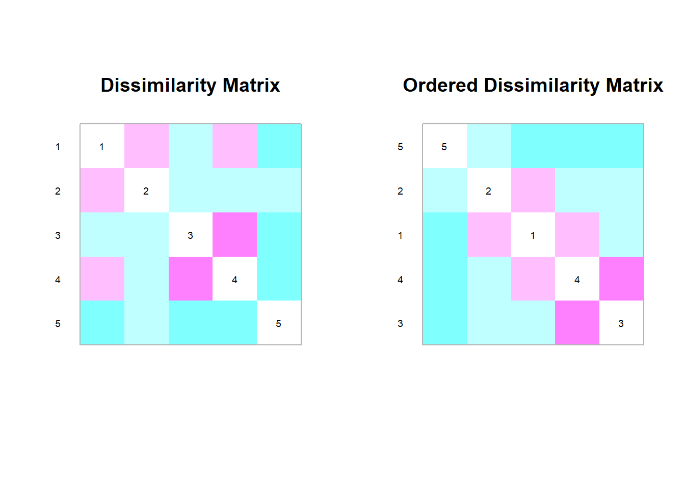

Taller 5 Seminario de distancias y coeficientes de similitud
Asignatura Estadística Multivariada
Resumen de las actividades
El presente taller tiene por propósito realizar una investigación sobre coeficientes de uso común para evaluar la similitud y distancia entre objetos (sitios, individuos, muestreos, etc.), evaluados a través de datos multivariados. Esta información será de mucha utilidad para diferentes técnicas de ordenación y de clasificación multivariada, en especial de los análisis de escalamiento multidimensional (ordenación) de clúster (clasificación).
El trabajo consiste en la realización de una investigación en grupos de máximo 3 estudiantes, basada en la contextualización de los coeficientes asignados por el docente. Se deben consultar los siguientes documentos:
Libro Numerical Ecology (Legendre y Legendre 1998) ENLACE DEL LIBRO

Capítulo 3. Libro Numerical Ecology with R (Borcard et al. 2018) ENLACE_DEL_LIBRO

Libro Coeficientes de asociación (Rodríguez-Salazar et al. 2001) ENLACE DEL LIBRO

Capitulo 7 de Rodríguez-Barrios, J. (2023) ENLACE DEL LIBRO

Requisitos de la actividad
Entregar un documento de máximo 4 páginas que responda a los siguientes requerimientos. Presentar un seminario de máximo 10 minutos, que contenga la información de los ítems 1 a 3.
Formula de los coeficientes y su explicación. Indicar en que técnicas multivariadas se aplican estas distancias o coeficientes de similitud.
Ejemplo en el que se aplique algún paquete de R que utilicen los coeficientes asignados (con matrices del punto 8).
Ejemplo de un estudio de caso, en el que se apliquen los coeficientes o distancias asignadas. Si en un mismo estudio no se aplican todas las distancias o coeficientes asignados, pueden presentar más estudios de caso.
En la Asignación, se debe cargar (1) un resumen por escrito en PDF de máximo 4 páginas (en Rmarkdwn o Quarto), con los ítems 1 a 3, junto a (2) los scripts de R y (3) las bases de datos .csv utilizadas.
La fecha límite de entrega del documento, envío de diapositivas será el miércoles 27 de septiembre.
Los trabajos con mayor revisión bibliográfica tendrán un puntaje superior.
Aplicar las figuras relacionadas a la distancia o coeficiente seleccionado, como las que se realizan en Borcard et al. (2018) o en Rodríguez-Barrios (2023).
Nota: Para el requisito 2, se debe trabajar el ejercicio con los datos del archivo “efem.csv” que corresponde a datos de abundancia de 8 géneros de larvas de Efemerópteros, colectadas en el Río Gaira, Santa Marta (Rodriguez et al. 2011) ENLACE. Se cuenta con 28 observaciones (columna 1), que relacionan a tres lugares del río (A, B y C) con hasta diez muestreos por cada sitio (descritos en las columnas 2 y 3).
En caso de que haya seleccionado alguno de los temas de exposición 1 al 3: El siguiente procedimiento muestra una manera en que se puede transformar la base de datos “efem” a binaria (comando ifelse), este procedimiento es para el caso en que el coeficiente asignado sea binario.
# Llamar en R a la base de datos “efem.csv” y asignarla como “datos”.
datos<-read.csv2("efem.csv",row.names=1)
names(datos) # Visualizar nombres de las variables a transformar
datos$Batds=ifelse(datos$Batds>0,1,datos$Batds) # Primera variable transformada en binaria.
datos$Lpthy=ifelse(datos$Lpthy>0,1,datos$Lpthy)
datos$Trcry=ifelse(datos$Trcry>0,1,datos$Trcry)
datos$Prbtd=ifelse(datos$Prbtd>0,1,datos$Prbtd)
datos$Cmlbt=ifelse(datos$Cmlbt>0,1,datos$Cmlbt)
datos$Thrld=ifelse(datos$Thrld>0,1,datos$Thrld)
datos$Lchln=ifelse(datos$Lchln>0,1,datos$Lchln)
datos$Trpds=ifelse(datos$Trpds>0,1,datos$Trpds)
str(datos) # Nueva estructura binaria
Temas a seleccionar
Cada grupo de trabajo debe seleccionar su tema de seminario en el siguiente enlace: FORMULARIO_TEMAS
Coeficientes de similitud y distancias a seleccionar por cada grupo de estudiantes
| Tema | Subtema | Estudiantes |
|---|---|---|
| Semejanza ecológica | Introducción, Análisis Q y R, Coeficientes de Asociación (Modo Q y R). Modo Q: Coeficientes de Similitud binarios simétricos y asimétricos S1, S2, S3 (simple matching coefficient). Ejemplos. | |
| Coeficientes asimétricos binarios | Introducción, Coeficientes S7 (Jaccard), S8(Sorensen), S15 (Gower). Ejemplos. | |
| Coeficientes asimétricos binarios | Introducción, Coeficientes S14 (Ochiai), S18 (kulczynski cuantitativo). Ejemplos. | |
| Modo Q: Coeficientes de distancia | Introducción al Modo Q, Diferencias entre Distancias Métricas, Semi-métricas y no métricas, D1 (Euclídea), D14 (Bray Curtis). Ejemplos. | |
| Modo Q: Coeficientes de distancia | Introducción, D17 (Distancia Hellinger), D16 (Distancia Chi Cuadrado), D3 (Distancia Cuerda). Ejemplos. | |
| Modo Q: Coeficientes de distancia | Introducción al Modo Q, D5 (Distancia generalizada de Mahalanobish) y su aplicación en comparación de muestras multivariadas | |
| Modo R: Asociación de variables. | Introducción al Modo R, Diferencias con el modo Q. Coeficientes de Pearson, Spearman y Kendall. ejemplos. |
Nota 2. Los responsables de los temas 1 al 3, deben explicar los coeficientes, basados en la siguiente matriz, p. 254 (Legendre y Legendre 1998), p. 22 (Rodríguez-Salazar et al. 2001) u otros referentes:

Explicar en que consisten los diferentes elementos de la matriz anterior (observaciones, 0, 1, a, b, c, d), incluidas las variables binarias que se analizan.